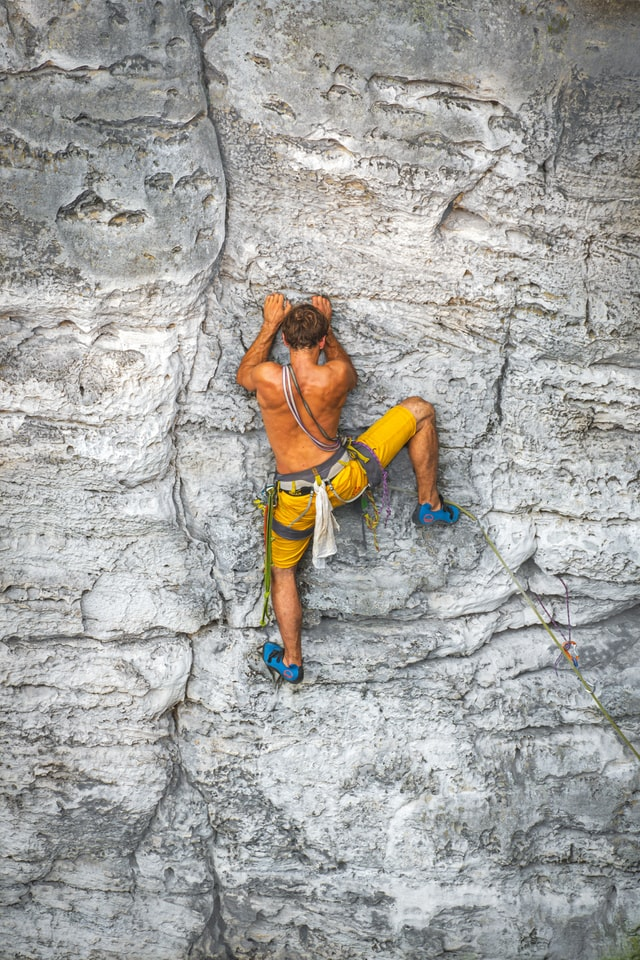

{{% tweet user="avantgame" id="1451016130999455750" %}}

We will understand Flow from:
The book Flow and the Psychology of Happiness, pp; 72-76; by Mihaly Csikszentmihalyi
This video:
{{% youtube "8h6IMYRoCZw" %}}
This TED Talk : Flow, the Secret to Happiness {{% youtube "fXIeFJCqsPs" %}}
This Article: 8 Ways To Create Flow According to Mihaly Csikszentmihalyi https://positivepsychology.com/mihaly-csikszentmihalyi-father-of-flow/
Ian Bogost, “Play at Anything”
Want still more Flow? Find me in this picture !!

Scott Eberle, “The Aspects of Play” https://www.journalofplay.org/sites/www.journalofplay.org/files/pdf-articles/6-2-article-elements-of-play.pdf
“Platform Creativity: Domain, Field, and Person”, https://medium.com/call4/domain-8a22b6b486f4